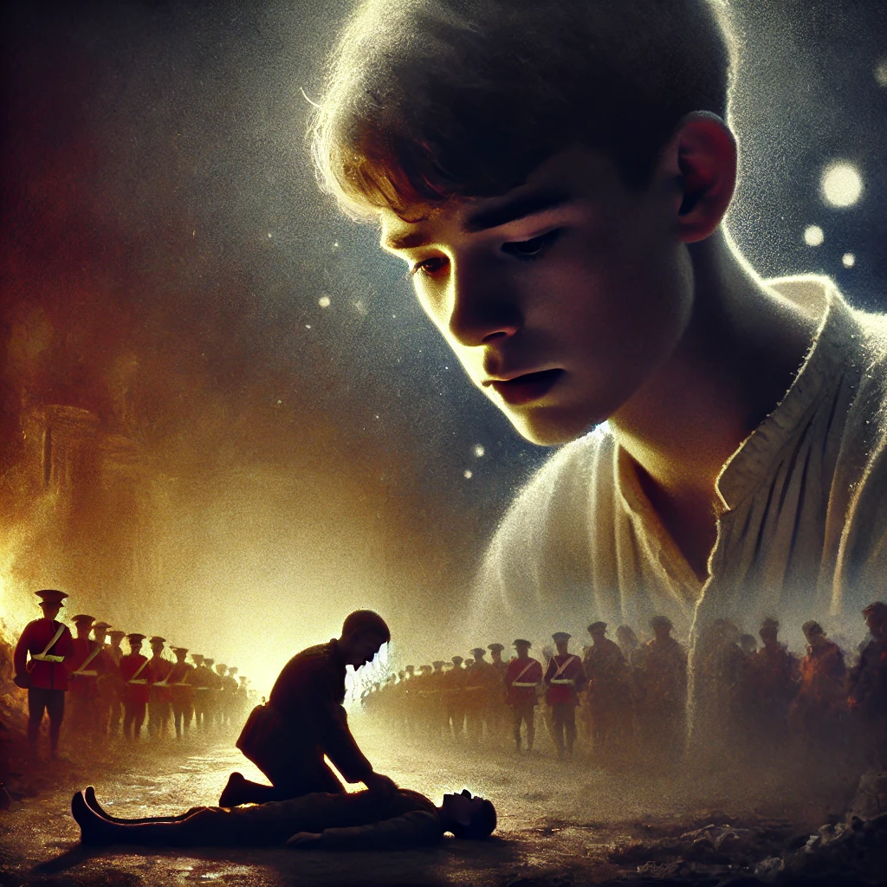

소년이 온다
목차
작가
한강
출판일
2014 년
감상평에 대한 AI그림
이 소설은 5.18 민주화운동의 참혹한 현실을 어린 소년 동호의 시선으로 담담하게 그려낸다. 시신을 수습하며 친구의 죽음을 떠올리는 동호의 모습은 역사적 아픔을 잊지 말아야 한다는 강렬한 메시지를 전달한다. 남겨진 자들의 상처를 어떻게 감당할 것인가에 대한 깊은 고민을 하게 하는 작품이었다.

감상평에 대한 AI 감정 평가
이 감상평에서 드러나는 감정은 비통함, 애도, 숙연함, 그리고 성찰입니다.
✨ 비통함 & 애도: "참혹한 현실", "친구의 죽음", "역사적 아픔" 등의 표현에서 깊은 슬픔과 애도의 감정이 강하게 드러납니다.
✨ 숙연함: "담담하게 그려낸다", "잊지 말아야 한다"와 같은 표현은 감정을 겉으로 크게 드러내기보다 차분하게 받아들이면서도 그 무게를 인식하는 태도를 보여줍니다.
✨ 성찰 & 고민: "남겨진 자들의 상처를 어떻게 감당할 것인가", "깊은 고민을 하게 하는 작품"이라는 문장에서 개인적이면서도 집단적인 차원에서 역사적 의미를 되새기고 반성하는 태도가 느껴집니다.
전반적으로 이 감상평은 슬픔과 애도를 바탕으로 한 깊은 숙고와 역사적 기억의 중요성을 강조하는 감정을 담고 있습니다.